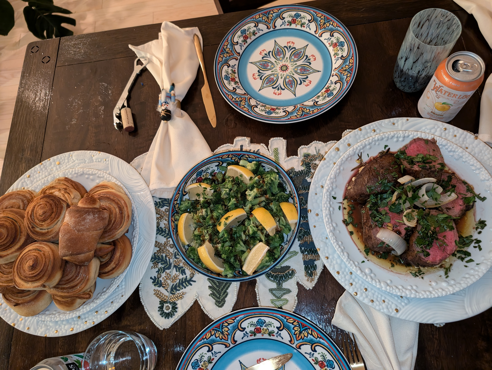

Hobbies

I love spending time with my dog, Ranger, who I took in as a stray almost a year ago.

I spend a lot of my free time cooking. I enjoy making a wide variety of dishes from many different cuisines. I appreciate the challenge of making recipes which may seem intimidating or unfmiliar.

I love being outdoors and have recently been getting very into running and hiking. I like finding new trails and paths to take around Las Cruces and the Organ Mountains.